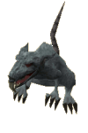
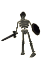

")
Varrock Sewers
Warning | Introduction | Location | Points of Interest | Personalities
Quests | Monsters of the Sewers | Miscellaneous
Quests | Monsters of the Sewers | Miscellaneous
Warning
These sewers contain a variety of monsters, up to level 42 Moss Giants. If you do not think you can take on these monsters, only bring armour/items you are prepared to lose.
Introduction

The deeper warriors venture into Varrock sewers, the greater the challenge becomes, with fights varying from rats to red spiders.
Location

Varrock is a key city in RuneScape, located in the north-eastern area of Misthalin.
When looking to access the Varrock Sewers, you'll need to look for an open manhole cover!
Points of Interest

As you can see from the map above, the area is a labyrinth of corridors and rooms. The deeper you go into the sewers, the harder the monsters will become.
Members will find the monsters in here useful as some drop items such as herbs (zombies), and seeds for your Farming skill (moss giants).
At the very end of the sewers, in the northern-most room containing moss giants, there is a pipe. If you are on a members' server, you can crawl through this pipe and gain access to Edgeville Dungeon, just near Vannaka.
Also in this final room, there is a spawn point for red spiders' eggs, used as a secondary ingredient in Herblore.
Personalities
![[image]](../../img/main/kbase/npc/area_guides/chathead/grimesquit.gif) The other of the two ratcatching sisters that reside in Varrock Sewers, Grimesquit is also an expert in getting fuzzies to chase and splat ratsies, so they can display their kills proudly on her rather grotesque ratpole.
|
![[image]](../../img/main/kbase/npc/area_guides/chathead/phingspet.gif) One of the two ratcatching sisters that reside in Varrock Sewers, Phingspet enjoys nothing more than chasing ratsies around the sewers, and occasionally helping out cat owners with advice on how to splats and squasherise rats.
|
|
| Grimesquit can be found with her sister, in the entrance area of the sewers. | Phingspet can be found with her sister, in the entrance area of the sewers. |
Quests
There are no quest start points in Varrock Sewers.
Monsters of the Sewers
|

Just like giant spiders and goblins, giant rats are a common sight. They are slightly tougher than goblins and giant spiders, but this still doesn't say much.
|

Skeletons may look harmless and weak, but their lack of muscle is more than made up for by the potent magic that holds them together. If you choose to fight skeletons, you may notice the skeleton's bones will give way when crushing attacks are used.
|
|
| Giant rats can be found in the entrance area of Varrock Sewers. | Skeletons are found in the north east area of the sewers, past the giant rats. |
![[image]](../../img/main/kbase/npc/area_guides/ghost.gif) No spooky dungeon or sewers would be complete without a ghost or two, so when you venture deeper into the sewers, don't be surprised if you bump into them. They can be dangerous, but Magic is quite effective against enemies that have no bodies.
|
![[image]](../../img/main/kbase/npc/area_guides/scorpion.gif) Scorpions in RuneScape are always to be watched out for, using their dangerous tails for vicious melee attacks.
|
|
| Ghosts can be found past the skeletons. | Scorpions are found in between the rats and skeletons. |
![[image]](../../img/main/kbase/npc/area_guides/zombie.gif) Zombies are usually found in the dark, damp areas of the RuneScape world, so it is not surprising that a few wander the central damp area of the sewers. Separated by a river from one side, it is a good place to use Magic attacks such as 'Crumble Undead' from a safe distance.
|
![[image]](../../img/main/kbase/npc/area_guides/deadly_red_spider.gif) Tougher than the giant spiders by far, deadly red spiders haven't earned their name letting adventurers walk by: they will give you a tough fight if you are unprepared. As this is a multicombat area, be careful you don't get outnumbered quickly!
|
|
| Zombies are found in the central area, past the ghosts. | Deadly Red Spiders can be found in the final area of Varrock Sewers. |
![[image]](../../img/main/kbase/npc/area_guides/moss_giant.gif) Moss giants are more commonly seen on the surface of RuneScape, but a fair amount have found their way into the final section of Varrock Sewers, where they and their beards wait for adventurers to disturb them. They are quite strong, and will put up a good fight against unprepared warriors.
|
Miscellaneous
- There is a red spider's egg respawn in the far section of the sewers.
- Monsters such as zombies and skeletons are weak against the 'Crumble Undead' spell.
- Use your Agility to your advantage if you are going to/from Edgeville Dungeon.
- In the area with zombies, you can climb up into a small room containing bears if you are looking for some.

More articles in
Dungeons
|
|